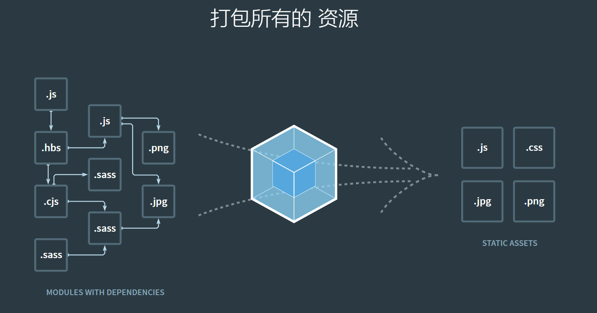
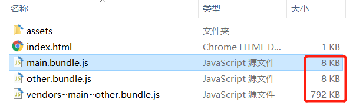
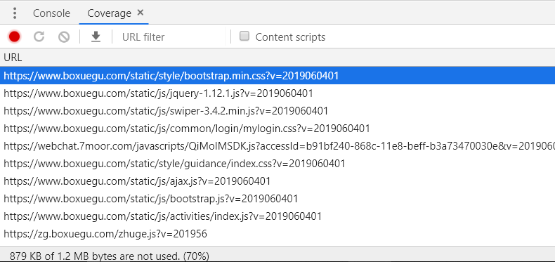
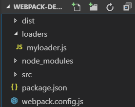
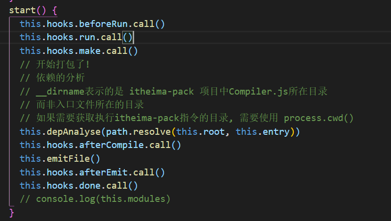

webpack从入门到进阶
第1章 课程介绍
学什么
本质上，webpack 是一个现代 JavaScript 应用程序的静态模块打包器(module bundler)。当 webpack 处理应用程序时，它会递归地构建一个依赖关系图(dependency graph)，其中包含应用程序需要的每个模块，然后将所有这些模块打包成一个或多个 bundle。

- 代码转译
- 模块合并
- 混淆压缩
- 代码分割
- 自动刷新
- 代码校验
- 自动部署
课程安排
- webpack基础配置
- webpack高级配置
- webpack性能优化
- tapable钩子
- AST抽象语法树的应用
- webpack原理分析, 手写webpack
- 手写常见的loader和plugin
学习前提
- JS基础
- ES6 / ES7 语法
- node基础
- npm的基本使用
课程目标
- 掌握webpack的安装
- 掌握webpack的基础配置
- 掌握loader的配置
- 掌握plugin的配置
- 了解webpack性能优化
- 了解webpack中的tapable
- 了解AST的应用
- 深入学习webpack原理，手写webpack
第2章 webpack基础
webpack的安装
注意：请先自行安装nodejs最新版的环境
全局安装webpack
npm i webpack webpack-cli -g项目中安装webpack (推荐)
npm i webpack webpack-cli -D
webpack的使用
webpack-cli
npm 5.2 以上的版本中提供了一个npx命令
npx 想要解决的主要问题，就是调用项目内部安装的模块，原理就是在node_modules下的.bin 目录中找到对应的命令执行
使用webpack命令：npx webpack
webpack4.0之后可以实现0配置打包构建，0配置的特点就是限制较多，无法自定义很多配置
开发中常用的还是使用webpack配置进行打包构建
webpack配置
webpack有四大核心概念:
- 入口(entry): 程序的入口js
- 输出(output): 打包后存放的位置
- loader: 用于对模块的源代码进行转换
插件(plugins): 插件目的在于解决 loader无法实现的其他事
配置webpack.config.js
- 运行
npx webpack
const path = require('path')
module.exports = {
// 入口文件配置
entry: './src/index.js',
// 出口文件配置项
output: {
// 输出的路径，webpack2起就规定必须是绝对路径
path: path.join(__dirname, 'dist'),
// 输出文件名字
filename: 'bundle.js'
},
mode: 'development' // 默认为production, 可以手动设置为development, 区别就是是否进行压缩混淆
}
将npx webpack命令配置到package.json的脚本中
- 配置
package.json - 运行
npm run build
{
"name": "webpack-basic",
"version": "1.0.0",
"main": "index.js",
"license": "MIT",
"scripts": {
"build": "webpack"
},
"devDependencies": {
"webpack": "^4.30.0",
"webpack-cli": "^3.3.1"
}
}
开发时自动编译工具
每次要编译代码时，手动运行 npm run build 就会变得很麻烦。
webpack 中有几个不同的选项，可以帮助你在代码发生变化后自动编译代码：
- webpack's Watch Mode
- webpack-dev-server
- webpack-dev-middleware
多数场景中，可能需要使用 webpack-dev-server，但是不妨探讨一下以上的所有选项。
watch
在webpack指令后面加上--watch参数即可
主要的作用就是监视本地项目文件的变化, 发现有修改的代码会自动编译打包, 生成输出文件
配置
package.json的scripts"watch": "webpack --watch"运行
npm run watch
以上是cli的方式设置watch的参数
还可以通过配置文件对watch的参数进行修改：
const path = require('path')
// webpack的配置文件遵循着CommonJS规范
module.exports = {
entry: './src/main.js',
output: {
// path.resolve() : 解析当前相对路径的绝对路径
// path: path.resolve('./dist/'),
// path: path.resolve(__dirname, './dist/'),
path: path.join(__dirname, './dist/'),
filename: 'bundle.js'
},
mode: 'development',
watch: true
}
运行npm run build
webpack-dev-server (推荐)
安装
devServer：devServer需要依赖webpack，必须在项目依赖中安装webpacknpm i webpack-dev-server webpack -Dindex.html中修改
<script src="/bundle.js"></script>运行：
npx webpack-dev-server运行：
npx webpack-dev-server --hot --open --port 8090配置
package.json的scripts："dev": "webpack-dev-server --hot --open --port 8090"运行
npm run dev
devServer会在内存中生成一个打包好的bundle.js，专供开发时使用，打包效率高，修改代码后会自动重新打包以及刷新浏览器，用户体验非常好
以上是cli的方式设置devServer的参数
还可以通过配置文件对devServer的参数进行修改：
- 修改
webpack.config.js
const path = require('path')
module.exports = {
// 入口文件配置
entry: './src/index.js',
// 出口文件配置项
output: {
// 输出的路径，webpack2起就规定必须是绝对路径
path: path.join(__dirname, 'dist'),
// 输出文件名字
filename: 'bundle.js'
},
devServer: {
port: 8090,
open: true,
hot: true
},
mode: 'development'
}
- 修改package.json的scripts:
"dev": "webpack-dev-server" - 运行
npm run dev
html插件
- 安装html-webpack-plugin插件
npm i html-webpack-plugin -D - 在
webpack.config.js中的plugins节点下配置
const HtmlWebpackPlugin = require('html-webpack-plugin')
plugins: [
new HtmlWebpackPlugin({
filename: 'index.html',
template: 'template.html'
})
]
- devServer时根据模板在express项目根目录下生成html文件(类似于devServer生成内存中的bundle.js)
- devServer时自动引入bundle.js
- 打包时会自动生成index.html
webpack-dev-middleware
webpack-dev-middleware 是一个容器(wrapper)，它可以把 webpack 处理后的文件传递给一个服务器(server)。 webpack-dev-server 在内部使用了它，同时，它也可以作为一个单独的包来使用，以便进行更多自定义设置来实现更多的需求。
安装
express和webpack-dev-middleware：npm i express webpack-dev-middleware -D新建
server.jsconst express = require('express'); const webpack = require('webpack'); const webpackDevMiddleware = require('webpack-dev-middleware'); const config = require('./webpack.config.js'); const app = express(); const compiler = webpack(config); app.use(webpackDevMiddleware(compiler, { publicPath: '/' })); app.listen(3000, function () { console.log('http://localhost:3000'); });配置
package.json中的scripts:"server": "node server.js"运行:
npm run server
注意: 如果要使用webpack-dev-middleware, 必须使用html-webpack-plugin插件, 否则html文件无法正确的输出到express服务器的根目录
小结
只有在开发时才需要使用自动编译工具, 例如: webpack-dev-server
项目上线时都会直接使用webpack进行打包构建, 不需要使用这些自动编译工具
自动编译工具只是为了提高开发体验
处理css
- 安装
npm i css-loader style-loader -D - 配置
webpack.config.js
module: {
rules: [
// 配置的是用来解析.css文件的loader(style-loader和css-loader)
{
// 用正则匹配当前访问的文件的后缀名是 .css
test: /\.css$/,
use: ['style-loader', 'css-loader'] // webpack底层调用这些包的顺序是从右到左
}
]
}
loader的释义:
- css-loader: 解析css文件
- style-loader: 将解析出来的结果 放到html中, 使其生效
处理less 和 sass
npm i less less-loader sass-loader node-sass -D
{ test: /\.less$/, use: ['style-loader', 'css-loader', 'less-loader'] },
{ test: /\.scss$/, use: ['style-loader', 'css-loader', 'sass-loader'] }
处理图片和字体
npm i file-loader url-loader -D
url-loader封装了file-loader, 所以使用url-loader时需要安装file-loader
{
test: /\.(png|jpg|gif)/,
use: [{
loader: 'url-loader',
options: {
// limit表示如果图片大于5KB，就以路径形式展示，小于的话就用base64格式展示
limit: 5 * 1024,
// 打包输出目录
outputPath: 'images',
// 打包输出图片名称
name: '[name]-[hash:4].[ext]'
}
}]
}
babel
npm i babel-loader @babel/core @babel/preset-env webpack -D如果需要支持更高级的ES6语法, 可以继续安装插件:
npm i @babel/plugin-proposal-class-properties -D也可以根据需要在babel官网找插件进行安装
{
test: /\.js$/,
use: {
loader: 'babel-loader',
options: {
presets: ['@babel/env'],
plugins: ['@babel/plugin-proposal-class-properties']
}
},
exclude: /node_modules/
}
官方更建议的做法是在项目根目录下新建一个.babelrc的babel配置文件
{
"presets": ["@babel/env"],
"plugins": ["@babel/plugin-proposal-class-properties"]
}
如果需要使用generator，无法直接使用babel进行转换，因为会将generator转换为一个regeneratorRuntime，然后使用mark和wrap来实现generator
但由于babel并没有内置regeneratorRuntime，所以无法直接使用
需要安装插件:
npm i @babel/plugin-transform-runtime -D
同时还需安装运行时依赖:
npm i @babel/runtime -D
在.babelrc中添加插件:
{
"presets": [
"@babel/env"
],
"plugins": [
"@babel/plugin-proposal-class-properties",
"@babel/plugin-transform-runtime"
]
}
如果需要使用ES6/7中对象原型提供的新方法，babel默认情况无法转换，即使用了transform-runtime的插件也不支持转换原型上的方法
需要使用另一个模块:
npm i @babel/polyfill -S
该模块需要在使用新方法的地方直接引入:
import '@babel/polyfill'
source map的使用
devtool
此选项控制是否生成，以及如何生成 source map。
使用 SourceMapDevToolPlugin 进行更细粒度的配置。查看 source-map-loader 来处理已有的 source map。
选择一种 source map 格式来增强调试过程。不同的值会明显影响到构建(build)和重新构建(rebuild)的速度。
可以直接使用
SourceMapDevToolPlugin/EvalSourceMapDevToolPlugin来替代使用devtool选项，它有更多的选项，但是切勿同时使用devtool选项和SourceMapDevToolPlugin/EvalSourceMapDevToolPlugin插件。因为devtool选项在内部添加过这些插件，所以会应用两次插件。
| devtool | 构建速度 | 重新构建速度 | 生产环境 | 品质(quality) |
|---|---|---|---|---|
| (none) | +++ | +++ | yes | 打包后的代码 |
| eval | +++ | +++ | no | 生成后的代码 |
| cheap-eval-source-map | + | ++ | no | 转换过的代码（仅限行） |
| cheap-module-eval-source-map | o | ++ | no | 原始源代码（仅限行） |
| eval-source-map | -- | + | no | 原始源代码 |
| cheap-source-map | + | o | no | 转换过的代码（仅限行） |
| cheap-module-source-map | o | - | no | 原始源代码（仅限行） |
| inline-cheap-source-map | + | o | no | 转换过的代码（仅限行） |
| inline-cheap-module-source-map | o | - | no | 原始源代码（仅限行） |
| source-map | -- | -- | yes | 原始源代码 |
| inline-source-map | -- | -- | no | 原始源代码 |
| hidden-source-map | -- | -- | yes | 原始源代码 |
| nosources-source-map | -- | -- | yes | 无源代码内容 |
这么多模式用哪个好？
开发环境推荐：
cheap-module-eval-source-map
生产环境推荐：
none(不使用source map)
原因如下：
- 使用 cheap 模式可以大幅提高 soure map 生成的效率。大部分情况我们调试并不关心列信息，而且就算 source map 没有列，有些浏览器引擎（例如 v8） 也会给出列信息。
- 使用 module 可支持 babel 这种预编译工具，映射转换前的代码。
- 使用 eval 方式可大幅提高持续构建效率。官方文档提供的速度对比表格可以看到 eval 模式的重新构建速度都很快。
- 使用 eval-source-map 模式可以减少网络请求。这种模式开启 DataUrl 本身包含完整 sourcemap 信息，并不需要像 sourceURL 那样，浏览器需要发送一个完整请求去获取 sourcemap 文件，这会略微提高点效率。而生产环境中则不宜用 eval，这样会让文件变得极大。
插件
clean-webpack-plugin
该插件在npm run build时自动清除dist目录后重新生成，非常方便
安装插件
npm i clean-webpack-plugin -D引入插件
const CleanWebpackPlugin = require('clean-webpack-plugin')使用插件, 在plugins中直接创建对象即可
plugins: [ new HtmlWebpackPlugin({ filename: 'index.html', template: './src/index.html' }), new CleanWebpackPlugin() ],
copy-webpack-plugin
安装插件
npm i copy-webpack-plugin -D引入插件
const CopyWebpackPlugin = require('copy-webpack-plugin')使用插件, 在plugins中插件对象并配置源和目标
from: 源, 从哪里拷贝, 可以是相对路径或绝对路径, 推荐绝对路径
to: 目标, 拷贝到哪里去, 相对于
output的路径, 同样可以相对路径或绝对路径, 但更推荐相对路径(直接算相对dist目录即可)plugins: [ new HtmlWebpackPlugin({ filename: 'index.html', template: './src/index.html' }), new CleanWebpackPlugin(), new CopyWebpackPlugin([ { from: path.join(__dirname, 'assets'), to: 'assets' } ]) ],
BannerPlugin
这是一个webpack的内置插件，用于给打包的JS文件加上版权注释信息
引入webpack
const webpack = require('webpack')创建插件对象
plugins: [ new HtmlWebpackPlugin({ filename: 'index.html', template: './src/index.html' }), new CleanWebpackPlugin(), new CopyWebpackPlugin([ { from: path.join(__dirname, 'assets'), to: 'assets' } ]), new webpack.BannerPlugin('黑马程序员牛逼!') ],
第3章 webpack高级配置
HTML中img标签的图片资源处理
安装
npm install -S html-withimg-loader在
webpack.config.js文件中添加loader{ test: /\.(htm|html)$/i, loader: 'html-withimg-loader' }使用时，只需要在html中正常引用图片即可，webpack会找到对应的资源进行打包，并修改html中的引用路径
多页应用打包
在
webpack.config.js中修改入口和出口配置// 1. 修改为多入口 entry: { main: './src/main.js', other: './src/other.js' }, output: { path: path.join(__dirname, './dist/'), // filename: 'bundle.js', // 2. 多入口无法对应一个固定的出口, 所以修改filename为[name]变量 filename: '[name].js', publicPath: '/' }, plugins: [ // 3. 如果用了html插件,需要手动配置多入口对应的html文件,将指定其对应的输出文件 new HtmlWebpackPlugin({ template: './index.html', filename: 'index.html', chunks: ['main'] }), new HtmlWebpackPlugin({ template: './index.html', filename: 'other.html', // chunks: ['other', 'main'] chunks: ['other'] }) ]修改入口为对象，支持多个js入口，同时修改output输出的文件名为
'[name].js'表示各自已入口文件名作为输出文件名，但是html-webpack-plugin不支持此功能，所以需要再拷贝一份插件，用于生成两个html页面，实现多页应用
第三方库的两种引入方式
可以通过expose-loader进行全局变量的注入，同时也可以使用内置插件webpack.ProvidePlugin对每个模块的闭包空间，注入一个变量，自动加载模块，而不必到处 import 或 require
expose-loader 将库引入到全局作用域
安装
expose-loadernpm i -D expose-loader配置loader
module: { rules: [{ test: require.resolve('jquery'), use: { loader: 'expose-loader', options: '$' } }] }tips:
require.resolve用来获取模块的绝对路径。所以这里的loader只会作用于 jquery 模块。并且只在 bundle 中使用到它时，才进行处理。
webpack.ProvidePlugin 将库自动加载到每个模块
引入webpack
const webpack = require('webpack')创建插件对象
要自动加载
jquery，我们可以将两个变量都指向对应的 node 模块new webpack.ProvidePlugin({ $: 'jquery', jQuery: 'jquery' })
Development / Production不同配置文件打包
项目开发时一般需要使用两套配置文件，用于开发阶段打包（不压缩代码，不优化代码，增加效率）和上线阶段打包（压缩代码，优化代码，打包后直接上线使用）
抽取三个配置文件：
webpack.base.js
webpack.prod.js
webpack.dev.js
步骤如下：
将开发环境和生产环境公用的配置放入base中，不同的配置各自放入prod或dev文件中（例如：mode）
然后在dev和prod中使用
webpack-merge把自己的配置与base的配置进行合并后导出npm i -D webpack-merge将package.json中的脚本参数进行修改，通过
--config手动指定特定的配置文件
定义环境变量
除了区分不同的配置文件进行打包，还需要在开发时知道当前的环境是开发阶段或上线阶段，所以可以借助内置插件DefinePlugin来定义环境变量。最终可以实现开发阶段与上线阶段的api地址自动切换。
引入webpack
const webpack = require('webpack')创建插件对象，并定义环境变量
new webpack.DefinePlugin({ IS_DEV: 'false' })在src打包的代码环境下可以直接使用
使用devServer解决跨域问题
在开发阶段很多时候需要使用到跨域，何为跨域？请看下图：

开发阶段往往会遇到上面这种情况，也许将来上线后，前端项目会和后端项目部署在同一个服务器下，并不会有跨域问题，但是由于开发时会用到webpack-dev-server，所以一定会产生跨域的问题
目前解决跨域主要的方案有：
- jsonp（淘汰）
- cors
- http proxy
此处介绍的使用devServer解决跨域，其实原理就是http proxy
将所有ajax请求发送给devServer服务器，再由devServer服务器做一次转发，发送给数据接口服务器
由于ajax请求是发送给devServer服务器的，所以不存在跨域，而devServer由于是用node平台发送的http请求，自然也不涉及到跨域问题，可以完美解决！

服务器代码（返回一段字符串即可）：
const express = require('express')
const app = express()
// const cors = require('cors')
// app.use(cors())
app.get('/api/getUserInfo', (req, res) => {
res.send({
name: '黑马儿',
age: 13
})
});
app.listen(9999, () => {
console.log('http://localhost:9999!');
});
前端需要配置devServer的proxy功能，在webpack.dev.js中进行配置：
devServer: {
open: true,
hot: true,
compress: true,
port: 3000,
// contentBase: './src'
proxy: {
'/api': 'http://localhost:9999'
}
},
意为前端请求/api的url时，webpack-dev-server会将请求转发给http://localhost:9999/api处，此时如果请求地址为http://localhost:9999/api/getUserInfo，只需要直接写/api/getUserInfo即可，代码如下：
axios.get('/api/getUserInfo').then(result => console.log(result))
HMR的使用
需要对某个模块进行热更新时，可以通过module.hot.accept方法进行文件监视
只要模块内容发生变化，就会触发回调函数，从而可以重新读取模块内容，做对应的操作
if (module.hot) {
module.hot.accept('./hotmodule.js', function() {
console.log('hotmodule.js更新了');
let str = require('./hotmodule.js')
console.log(str)
})
}
第4章 webpack优化
production模式打包自带优化
tree shaking
tree shaking 是一个术语，通常用于打包时移除 JavaScript 中的未引用的代码(dead-code)，它依赖于 ES6 模块系统中
import和export的静态结构特性。开发时引入一个模块后，如果只使用其中一个功能，上线打包时只会把用到的功能打包进bundle，其他没用到的功能都不会打包进来，可以实现最基础的优化
scope hoisting
scope hoisting的作用是将模块之间的关系进行结果推测， 可以让 Webpack 打包出来的代码文件更小、运行的更快
scope hoisting 的实现原理其实很简单：分析出模块之间的依赖关系，尽可能的把打散的模块合并到一个函数中去，但前提是不能造成代码冗余。 因此只有那些被引用了一次的模块才能被合并。
由于 scope hoisting 需要分析出模块之间的依赖关系，因此源码必须采用 ES6 模块化语句，不然它将无法生效。 原因和tree shaking一样。
代码压缩
所有代码使用UglifyJsPlugin插件进行压缩、混淆
css优化
将css提取到独立的文件中
mini-css-extract-plugin是用于将CSS提取为独立的文件的插件，对每个包含css的js文件都会创建一个CSS文件，支持按需加载css和sourceMap
只能用在webpack4中，有如下优势:
- 异步加载
- 不重复编译，性能很好
- 容易使用
- 只针对CSS
使用方法：
安装
npm i -D mini-css-extract-plugin在webpack配置文件中引入插件
const MiniCssExtractPlugin = require('mini-css-extract-plugin')创建插件对象，配置抽离的css文件名，支持placeholder语法
new MiniCssExtractPlugin({ filename: '[name].css' })将原来配置的所有
style-loader替换为MiniCssExtractPlugin.loader{ test: /\.css$/, // webpack读取loader时 是从右到左的读取, 会将css文件先交给最右侧的loader来处理 // loader的执行顺序是从右到左以管道的方式链式调用 // css-loader: 解析css文件 // style-loader: 将解析出来的结果 放到html中, 使其生效 // use: ['style-loader', 'css-loader'] use: [MiniCssExtractPlugin.loader, 'css-loader', 'postcss-loader'] }, // { test: /\.less$/, use: ['style-loader', 'css-loader', 'less-loader'] }, { test: /\.less$/, use: [MiniCssExtractPlugin.loader, 'css-loader', 'less-loader'] }, // { test: /\.s(a|c)ss$/, use: ['style-loader', 'css-loader', 'sass-loader'] }, { test: /\.s(a|c)ss$/, use: [MiniCssExtractPlugin.loader, 'css-loader', 'sass-loader'] },
自动添加css前缀
使用postcss，需要用到postcss-loader和autoprefixer插件
安装
npm i -D postcss-loader autoprefixer修改webpack配置文件中的loader，将
postcss-loader放置在css-loader的右边（调用链从右到左）{ test: /\.css$/, // webpack读取loader时 是从右到左的读取, 会将css文件先交给最右侧的loader来处理 // loader的执行顺序是从右到左以管道的方式链式调用 // css-loader: 解析css文件 // style-loader: 将解析出来的结果 放到html中, 使其生效 // use: ['style-loader', 'css-loader'] use: [MiniCssExtractPlugin.loader, 'css-loader', 'postcss-loader'] }, // { test: /\.less$/, use: ['style-loader', 'css-loader', 'less-loader'] }, { test: /\.less$/, use: [MiniCssExtractPlugin.loader, 'css-loader', 'postcss-loader', 'less-loader'] }, // { test: /\.s(a|c)ss$/, use: ['style-loader', 'css-loader', 'sass-loader'] }, { test: /\.s(a|c)ss$/, use: [MiniCssExtractPlugin.loader, 'css-loader', 'postcss-loader', 'sass-loader'] },项目根目录下添加
postcss的配置文件：postcss.config.js在
postcss的配置文件中使用插件module.exports = { plugins: [require('autoprefixer')] }
开启css压缩
需要使用optimize-css-assets-webpack-plugin插件来完成css压缩
但是由于配置css压缩时会覆盖掉webpack默认的优化配置，导致JS代码无法压缩，所以还需要手动把JS代码压缩插件导入进来：terser-webpack-plugin
安装
npm i -D optimize-css-assets-webpack-plugin terser-webpack-plugin导入插件
const TerserJSPlugin = require('terser-webpack-plugin') const OptimizeCSSAssetsPlugin = require('optimize-css-assets-webpack-plugin')在webpack配置文件中添加配置节点
optimization: { minimizer: [new TerserJSPlugin({}), new OptimizeCSSAssetsPlugin({})], },
tips: webpack4默认采用的JS压缩插件为：uglifyjs-webpack-plugin，在mini-css-extract-plugin上一个版本中还推荐使用该插件，但最新的v0.6中建议使用teser-webpack-plugin来完成js代码压缩，具体原因未在官网说明，我们就按照最新版的官方文档来做即可
js代码分离
Code Splitting是webpack打包时用到的重要的优化特性之一，此特性能够把代码分离到不同的 bundle 中，然后可以按需加载或并行加载这些文件。代码分离可以用于获取更小的 bundle，以及控制资源加载优先级，如果使用合理，会极大影响加载时间。
有三种常用的代码分离方法：
- 入口起点(entry points)：使用
entry配置手动地分离代码。 - 防止重复(prevent duplication)：使用
SplitChunksPlugin去重和分离 chunk。 - 动态导入(dynamic imports)：通过模块的内联函数调用来分离代码。
手动配置多入口
在webpack配置文件中配置多个入口
entry: { main: './src/main.js', other: './src/other.js' }, output: { // path.resolve() : 解析当前相对路径的绝对路径 // path: path.resolve('./dist/'), // path: path.resolve(__dirname, './dist/'), path: path.join(__dirname, '..', './dist/'), // filename: 'bundle.js', filename: '[name].bundle.js', publicPath: '/' },在main.js和other.js中都引入同一个模块，并使用其功能
main.js
import $ from 'jquery' $(function() { $('<div></div>').html('main').appendTo('body') })other.js
import $ from 'jquery' $(function() { $('<div></div>').html('other').appendTo('body') })修改package.json的脚本，添加一个使用dev配置文件进行打包的脚本（目的是不压缩代码检查打包的bundle时更方便）
"scripts": { "build": "webpack --config ./build/webpack.prod.js", "dev-build": "webpack --config ./build/webpack.dev.js" }运行
npm run dev-build，进行打包查看打包后的结果，发现other.bundle.js和main.bundle.js都同时打包了jQuery源文件


这种方法存在一些问题:
- 如果入口 chunks 之间包含重复的模块，那些重复模块都会被引入到各个 bundle 中。
- 这种方法不够灵活，并且不能将核心应用程序逻辑进行动态拆分代码。
抽取公共代码
tips: Webpack v4以上使用的插件为SplitChunksPlugin，以前使用的CommonsChunkPlugin已经被移除了，最新版的webpack只需要在配置文件中的optimization节点下添加一个splitChunks属性即可进行相关配置
修改webpack配置文件
optimization: { splitChunks: { chunks: 'all' } },运行
npm run dev-build重新打包查看
dist目录
查看
vendors~main~other.bundle.js，其实就是把都用到的jQuery打包到了一个单独的js中
动态导入 (懒加载)
webpack4默认是允许import语法动态导入的，但是需要babel的插件支持，最新版babel的插件包为：@babel/plugin-syntax-dynamic-import，以前老版本不是@babel开头，已经无法使用，需要注意
动态导入最大的好处是实现了懒加载，用到哪个模块才会加载哪个模块，可以提高SPA应用程序的首屏加载速度，Vue、React、Angular框架的路由懒加载原理一样
安装babel插件
npm install -D @babel/plugin-syntax-dynamic-import修改.babelrc配置文件，添加
@babel/plugin-syntax-dynamic-import插件{ "presets": ["@babel/env"], "plugins": [ "@babel/plugin-proposal-class-properties", "@babel/plugin-transform-runtime", "@babel/plugin-syntax-dynamic-import" ] }将jQuery模块进行动态导入
function getComponent() { return import('jquery').then(({ default: $ }) => { return $('<div></div>').html('main') }) }给某个按钮添加点击事件，点击后调用getComponent函数创建元素并添加到页面
window.onload = function () { document.getElementById('btn').onclick = function () { getComponent().then(item => { item.appendTo('body') }) } }
SplitChunksPlugin配置参数
webpack4之后，使用SplitChunksPlugin插件替代了以前CommonsChunkPlugin
而SplitChunksPlugin的配置，只需要在webpack配置文件中的optimization节点下的splitChunks进行修改即可，如果没有任何修改，则会使用默认配置
默认的SplitChunksPlugin 配置适用于绝大多数用户
webpack 会基于如下默认原则自动分割代码：
- 公用代码块或来自 node_modules 文件夹的组件模块。
- 打包的代码块大小超过 30k（最小化压缩之前）。
- 按需加载代码块时，同时发送的请求最大数量不应该超过 5。
- 页面初始化时，同时发送的请求最大数量不应该超过 3。
以下是SplitChunksPlugin的默认配置：
module.exports = {
//...
optimization: {
splitChunks: {
chunks: 'async', // 只对异步加载的模块进行拆分，可选值还有all | initial
minSize: 30000, // 模块最少大于30KB才拆分
maxSize: 0, // 模块大小无上限，只要大于30KB都拆分
minChunks: 1, // 模块最少引用一次才会被拆分
maxAsyncRequests: 5, // 异步加载时同时发送的请求数量最大不能超过5,超过5的部分不拆分
maxInitialRequests: 3, // 页面初始化时同时发送的请求数量最大不能超过3,超过3的部分不拆分
automaticNameDelimiter: '~', // 默认的连接符
name: true, // 拆分的chunk名,设为true表示根据模块名和CacheGroup的key来自动生成,使用上面连接符连接
cacheGroups: { // 缓存组配置,上面配置读取完成后进行拆分,如果需要把多个模块拆分到一个文件,就需要缓存,所以命名为缓存组
vendors: { // 自定义缓存组名
test: /[\\/]node_modules[\\/]/, // 检查node_modules目录,只要模块在该目录下就使用上面配置拆分到这个组
priority: -10 // 权重-10,决定了哪个组优先匹配,例如node_modules下有个模块要拆分,同时满足vendors和default组,此时就会分到vendors组,因为-10 > -20
},
default: { // 默认缓存组名
minChunks: 2, // 最少引用两次才会被拆分
priority: -20, // 权重-20
reuseExistingChunk: true // 如果主入口中引入了两个模块,其中一个正好也引用了后一个,就会直接复用,无需引用两次
}
}
}
}
};
noParse
在引入一些第三方模块时，例如jQuery、bootstrap等，我们知道其内部肯定不会依赖其他模块，因为最终我们用到的只是一个单独的js文件或css文件
所以此时如果webpack再去解析他们的内部依赖关系，其实是非常浪费时间的，我们需要阻止webpack浪费精力去解析这些明知道没有依赖的库
可以在webpack配置文件的module节点下加上noParse，并配置正则来确定不需要解析依赖关系的模块
module: {
noParse: /jquery|bootstrap/
}
IgnorePlugin
在引入一些第三方模块时，例如moment，内部会做i18n国际化处理，所以会包含很多语言包，而语言包打包时会比较占用空间，如果我们项目只需要用到中文，或者少数语言，可以忽略掉所有的语言包，然后按需引入语言包
从而使得构建效率更高，打包生成的文件更小
需要忽略第三方模块内部依赖的其他模块，只需要三步：
- 首先要找到moment依赖的语言包是什么
- 使用IgnorePlugin插件忽略其依赖
- 需要使用某些依赖时自行手动引入
具体实现如下：
通过查看moment的源码来分析：
function loadLocale(name) { var oldLocale = null; // TODO: Find a better way to register and load all the locales in Node if (!locales[name] && (typeof module !== 'undefined') && module && module.exports) { try { oldLocale = globalLocale._abbr; var aliasedRequire = require; aliasedRequire('./locale/' + name); getSetGlobalLocale(oldLocale); } catch (e) {} } return locales[name]; }观察上方代码，同时查看moment目录下确实有locale目录，其中放着所有国家的语言包，可以分析得出：locale目录就是moment所依赖的语言包目录
使用IgnorePlugin插件来忽略掉moment模块的locale目录
在webpack配置文件中安装插件，并传入配置项
参数1：表示要忽略的资源路径
参数2：要忽略的资源上下文（所在哪个目录）
两个参数都是正则对象
new webpack.IgnorePlugin(/\.\/locale/, /moment/)使用moment时需要手动引入语言包，否则默认使用英文
import moment from 'moment' import 'moment/locale/zh-cn' moment.locale('zh-CN') console.log(moment().subtract(6, 'days').calendar())
DllPlugin
在引入一些第三方模块时，例如vue、react、angular等框架，这些框架的文件一般都是不会修改的，而每次打包都需要去解析它们，也会影响打包速度，哪怕做拆分，也只是提高了上线后用户访问速度，并不会提高构建速度，所以如果需要提高构建速度，应该使用动态链接库的方式，类似于Windows中的dll文件。
借助DllPlugin插件实现将这些框架作为一个个的动态链接库，只构建一次，以后每次构建都只生成自己的业务代码，可以大大提高构建效率！
主要思想在于，将一些不做修改的依赖文件，提前打包，这样我们开发代码发布的时候就不需要再对这部分代码进行打包，从而节省了打包时间。
涉及两个插件：
DllPlugin
使用一个单独webpack配置创建一个dll文件。并且它还创建一个manifest.json。DllReferencePlugin使用该json文件来做映射依赖性。（这个文件会告诉我们的哪些文件已经提取打包好了）
配置参数：
- context (可选): manifest文件中请求的上下文，默认为该webpack文件上下文。
- name: 公开的dll函数的名称，和output.library保持一致即可。
- path: manifest.json生成的文件夹及名字
DllReferencePlugin
这个插件用于主webpack配置，它引用的dll需要预先构建的依赖关系。
context: manifest文件中请求的上下文。
manifest: DllPlugin插件生成的manifest.json
content(可选): 请求的映射模块id(默认为manifest.content)
name(可选): dll暴露的名称
scope(可选): 前缀用于访问dll的内容
sourceType(可选): dll是如何暴露(libraryTarget)
将Vue项目中的库抽取成Dll
准备一份将Vue打包成DLL的webpack配置文件
在build目录下新建一个文件：webpack.vue.js
配置入口：将多个要做成dll的库全放进来
配置出口：一定要设置library属性，将打包好的结果暴露在全局
配置plugin：设置打包后dll文件名和manifest文件所在地
const path = require('path') const webpack = require('webpack') module.exports = { mode: 'development', entry: { vue: [ 'vue/dist/vue.js', 'vue-router' ] }, output: { filename: '[name]_dll.js', path: path.resolve(__dirname, '../dist'), library: '[name]_dll' }, plugins: [ new webpack.DllPlugin({ name: '[name]_dll', path: path.resolve(__dirname, '../dist/manifest.json') }) ] }在webpack.base.js中进行插件的配置
使用DLLReferencePlugin指定manifest文件的位置即可
new webpack.DllReferencePlugin({ manifest: path.resolve(__dirname, '../dist/manifest.json') })安装add-asset-html-webpack-plugin
npm i add-asset-html-webpack-plugin -D配置插件自动添加script标签到HTML中
new AddAssetHtmlWebpackPlugin({ filepath: path.resolve(__dirname, '../dist/vue_dll.js') })
将React项目中的库抽取成Dll
准备一份将React打包成DLL的webpack配置文件
在build目录下新建一个文件：webpack.vue.js
配置入口：将多个要做成dll的库全放进来
配置出口：一定要设置library属性，将打包好的结果暴露在全局
配置plugin：设置打包后dll文件名和manifest文件所在地
const path = require('path') const webpack = require('webpack') module.exports = { mode: 'development', entry: { react: [ 'react', 'react-dom' ] }, output: { filename: '[name]_dll.js', path: path.resolve(__dirname, '../dist'), library: '[name]_dll' }, plugins: [ new webpack.DllPlugin({ name: '[name]_dll', path: path.resolve(__dirname, '../dist/manifest.json') }) ] }在webpack.base.js中进行插件的配置
使用DLLReferencePlugin指定manifest文件的位置即可
new webpack.DllReferencePlugin({ manifest: path.resolve(__dirname, '../dist/manifest.json') })安装add-asset-html-webpack-plugin
npm i add-asset-html-webpack-plugin -D配置插件自动添加script标签到HTML中
new AddAssetHtmlWebpackPlugin({ filepath: path.resolve(__dirname, '../dist/react_dll.js') })
Happypack

由于webpack在node环境中运行打包构建，所以是单线程的模式，在打包众多资源时效率会比较低下，早期可以通过Happypack来实现多进程打包。当然，这个问题只出现在低版本的webpack中，现在的webpack性能已经非常强劲了，所以无需使用Happypack也可以实现高性能打包
引用官网原文：
Maintenance mode notice
My interest in the project is fading away mainly because I'm not using JavaScript as much as I was in the past. Additionally, Webpack's native performance is improving and (I hope) it will soon make this plugin unnecessary.
See the FAQ entry about Webpack 4 and thread-loader.
Contributions are always welcome. Changes I make from this point will be restricted to bug-fixing. If someone wants to take over, feel free to get in touch.
Thanks to everyone who used the library, contributed to it and helped in refining it!!!
由此可以看出作者已经发现，webpack的性能已经强大到不需要使用该插件了，而且小项目使用该插件反而会导致性能损耗过大，因为开启进程是需要耗时的
使用方法：
安装插件
npm i -D happypack在webpack配置文件中引入插件
const HappyPack = require('happypack')修改loader的配置规则
{ test: /.js$/, use: { loader: 'happypack/loader' }, include: path.resolve(__dirname, '../src'), exclude: /node_modules/ }配置插件
new HappyPack({ loaders: [ 'babel-loader' ] })运行打包命令
npm run build
浏览器缓存
在做了众多代码分离的优化后，其目的是为了利用浏览器缓存，达到提高访问速度的效果，所以构建项目时做代码分割是必须的，例如将固定的第三方模块抽离，下次修改了业务代码，重新发布上线不重启服务器，用户再次访问服务器就不需要再次加载第三方模块了
但此时会遇到一个新的问题，如果再次打包上线不重启服务器，客户端会把以前的业务代码和第三方模块同时缓存，再次访问时依旧会访问缓存中的业务代码，所以会导致业务代码也无法更新
需要在output节点的filename中使用placeholder语法，根据代码内容生成文件名的hash：
output: {
// path.resolve() : 解析当前相对路径的绝对路径
// path: path.resolve('./dist/'),
// path: path.resolve(__dirname, './dist/'),
path: path.join(__dirname, '..', './dist/'),
// filename: 'bundle.js',
filename: '[name].[contenthash:8].bundle.js',
publicPath: '/'
},
之后每次打包业务代码时，如果有改变，会生成新的hash作为文件名，浏览器就不会使用缓存了，而第三方模块不会重新打包生成新的名字，则会继续使用缓存
打包分析
项目构建完成后，需要通过一些工具对打包后的bundle进行分析，通过分析才能总结出一些经验，官方推荐的分析方法有两步完成：
使用
--profile --json参数，以json格式来输出打包后的结果到某个指定文件中webpack --profile --json > stats.json将stats.json文件放入工具中进行分析
官方推荐的其他四个工具：
其中webpack-bundle-analyzer是一个插件，可以以插件的方式安装到项目中
Prefetching和Preloading
在优化访问性能时，除了充分利用浏览器缓存之外，还需要涉及一个性能指标：coverage rate（覆盖率）
可以在Chrome浏览器的控制台中按：ctrl + shift + p，查找coverage，打开覆盖率面板
开始录制后刷新网页，即可看到每个js文件的覆盖率，以及总的覆盖率

想提高覆盖率，需要尽可能多的使用动态导入，也就是懒加载功能，将一切能使用懒加载的地方都是用懒加载，这样可以大大提高覆盖率
但有时候使用懒加载会影响用户体验，所以可以在懒加载时使用魔法注释：Prefetching，是指在首页资源加载完毕后，空闲时间时，将动态导入的资源加载进来，这样即可以提高首屏加载速度，也可以解决懒加载可能会影响用户体验的问题，一举两得！
function getComponent() {
return import(/* webpackPrefetch: true */ 'jquery').then(({ default: $ }) => {
return $('<div></div>').html('我是main')
})
}
第5章 webpack原理
学习目标
- 了解webpack打包原理
- 了解webpack的loader原理
- 了解webpack的插件原理
- 了解ast抽象语法树的应用
- 了解tapable的原理
- 手写一个简单的webpack
项目准备工作
新建一个项目，起一个炫酷的名字
新建
bin目录，将打包工具主程序放入其中主程序的顶部应当有：
#!/usr/bin/env node标识，指定程序执行环境为node在
package.json中配置bin脚本{ "bin": "./bin/itheima-pack.js" }通过
npm link链接到全局包中，供本地测试使用
分析webpack打包的bundle文件
其内部就是自己实现了一个__webpack_require__函数，递归导入依赖关系
(function (modules) { // webpackBootstrap
// The module cache
var installedModules = {};
// The require function
function __webpack_require__(moduleId) {
// Check if module is in cache
if (installedModules[moduleId]) {
return installedModules[moduleId].exports;
}
// Create a new module (and put it into the cache)
var module = installedModules[moduleId] = {
i: moduleId,
l: false,
exports: {}
};
// Execute the module function
modules[moduleId].call(module.exports, module, module.exports, __webpack_require__);
// Flag the module as loaded
module.l = true;
// Return the exports of the module
return module.exports;
}
// Load entry module and return exports
return __webpack_require__(__webpack_require__.s = "./src/index.js");
})
({
"./src/index.js":
(function (module, exports, __webpack_require__) {
eval("let news = __webpack_require__(/*! ./news.js */ \"./src/news.js\")\r\nconsole.log(news.content)\n\n//# sourceURL=webpack:///./src/index.js?");
}),
"./src/message.js":
(function (module, exports) {
eval("module.exports = {\r\n content: '今天要下雨了!!!'\r\n}\n\n//# sourceURL=webpack:///./src/message.js?");
}),
"./src/news.js":
(function (module, exports, __webpack_require__) {
eval("let message = __webpack_require__(/*! ./message.js */ \"./src/message.js\")\r\n\r\nmodule.exports = {\r\n content: '今天有个大新闻,爆炸消息!!!内容是:' + message.content\r\n}\n\n//# sourceURL=webpack:///./src/news.js?");
})
});
自定义loader
学习目标
在学习给自己写的itheima-pack工具添加loader功能之前，得先学习webpack中如何自定义loader，所以学习步骤分为两大步：
- 掌握自定义webpack的loader
- 学习给itheima-pack添加loader功能并写一个loader
webpack以及我们自己写的itheima-pack都只能处理JavaScript文件，如果需要处理其他文件，或者对JavaScript代码做一些操作，则需要用到loader。
loader是webpack中四大核心概念之一，主要功能是将一段匹配规则的代码进行加工处理，生成最终的代码后输出，是webpack打包环节中非常重要的一环。
loader 可以将所有类型的文件转换为 webpack 能够处理的有效模块，然后你就可以利用 webpack 的打包能力，对它们进行处理。
之前都使用过别人写好的loader，步骤大致分为：
- 装包
- 在webpack.config.js中配置module节点下的rules即可，例如babel-loader（省略其他配置，只论loader）
- （可选步骤）可能还需要其他的配置，例如babel需要配置presets和plugin
const path = require('path')
module.exports = {
entry: './src/index.js',
output: {
path: path.join(__dirname, 'dist'),
filename: 'bundle.js'
},
module: {
rules: [
{ test: /\.js$/, use: 'babel-loader' }
]
},
mode: 'development'
}
实现一个简单的loader
loader到底是什么东西？能不能自己写？
答案是肯定的，loader就是一个函数，同样也可以自己来写
- 在项目根目录中新建一个目录存放自己写的loader：

编写myloader.js，其实loader就是对外暴露一个函数
第一个参数就是loader要处理的代码
module.exports = function(source) { console.log(source) // 只是简单打印并返回结果，不作任何处理 return source }同样在webpack.config.js中配置自己写的loader，为了方便演示，直接匹配所有的js文件使用自己的myloader进行处理
const path = require('path') module.exports = { entry: './src/index.js', output: { path: path.join(__dirname, 'dist'), filename: 'bundle.js' }, module: { rules: [ { test: /.js$/, use: './loaders/myloader.js' } ] }, mode: 'development' }如果需要实现一个简单的loader，例如将js中所有的“今天”替换成“明天”
只需要修改myloader.js的内容如下即可
module.exports = function(source) { return source.replace(/今天/g, '明天') }同时也可以配置多个loader对代码进行处理
const path = require('path') module.exports = { entry: './src/index.js', output: { path: path.join(__dirname, 'dist'), filename: 'bundle.js' }, module: { rules: [ { test: /.js$/, use: ['./loaders/myloader2.js', './loaders/myloader.js'] } ] }, mode: 'development' }myloader2.js
module.exports = function(source) { return source.replace(/爆炸/g, '小道') }
loader的分类
不同类型的loader加载时优先级不同，优先级顺序遵循：
前置 > 行内 > 普通 > 后置
pre: 前置loader
post: 后置loader
指定Rule.enforce的属性即可设置loader的种类，不设置默认为普通loader
在itheima-pack中添加loader的功能
通过配置loader和手写loader可以发现，其实webpack能支持loader，主要步骤如下：
- 读取webpack.config.js配置文件的module.rules配置项，进行倒序迭代（rules的每项匹配规则按倒序匹配）
- 根据正则匹配到对应的文件类型，同时再批量导入loader函数
- 倒序迭代调用所有loader函数（loader的加载顺序从右到左，也是倒叙）
- 最后返回处理后的代码
在实现itheima-pack的loader功能时，同样也可以在加载每个模块时，根据rules的正则来匹配是否满足条件，如果满足条件则加载对应的loader函数并迭代调用
depAnalyse()方法中获取到源码后，读取loader：
let rules = this.config.module.rules
for (let i = rules.length - 1; i >= 0; i--) {
// console.log(rules[i])
let {test, use} = rules[i]
if (test.test(modulePath)) {
for (let j = use.length - 1; j >= 0; j--) {
let loaderPath = path.join(this.root, use[j])
let loader = require(loaderPath)
source = loader(source)
}
}
}
自定义插件
学习目标
在学习给自己写的itheima-pack工具添加plugin功能之前，得先学习webpack中如何自定义plugin，所以学习步骤分为两大步：
- 掌握自定义webpack的plugin
- 学习给itheima-pack添加plugin功能并写一个plugin
插件接口可以帮助用户直接触及到编译过程(compilation process)。 插件可以将处理函数(handler)注册到编译过程中的不同事件点上运行的生命周期钩子函数上。 当执行每个钩子时， 插件能够完全访问到编译(compilation)的当前状态。
简单理解，自定义插件就是在webpack编译过程的生命周期钩子中，进行编码开发，实现一些功能。
webpack插件的组成
- 一个 JavaScript 命名函数。
- 在插件函数的 prototype 上定义一个 apply 方法。
- 指定一个绑定到 webpack 自身的事件钩子。
- 处理 webpack 内部实例的特定数据。
- 功能完成后调用 webpack 提供的回调。
webpack的生命周期钩子
| 钩子 | 作用 | 参数 | 类型 |
|---|---|---|---|
| entryOption | 在处理了webpack选项的entry配置后调用 | context, entry | SyncBailHook |
| afterPlugins | 在初始化内部插件列表后调用。 | compiler | SyncHook |
| afterResolvers | Compiler初始化完毕后调用。 | compiler | SyncHook |
| environment | 在准备编译器环境时调用，在对配置文件中的插件进行初始化之后立即调用。 | 无 | SyncHook |
| afterEnvironment | 在environment钩子之后立即调用，当编译器环境设置完成时。 | 无 | SyncHook |
| beforeRun | 在运行Compiler之前调用。 | compiler | AsyncSeriesHook |
| run | Compiler开始工作时调用。 | compiler | AsyncSeriesHook |
| watchRun | 在新的编译被触发但在实际开始编译之前，在监视模式期间执行插件。 | compiler | AsyncSeriesHook |
| normalModuleFactory | NormalModuleFactory创建后调用。 | normalModuleFactory | SyncHook |
| contextModuleFactory | ContextModuleFactory创建后运行插件。 | contextModuleFactory | SyncHook |
| beforeCompile | 创建compilation参数后执行插件。 | compilationParams | AsyncSeriesHook |
| compile | beforeCompile在创建新编辑之前立即调用。 | compilationParams | SyncHook |
| thisCompilation | 在触发compilation事件之前，在初始化编译时调用。 | compilation，compilationParams | SyncHook |
| compilation | 创建compilation后运行插件。 | compilation，compilationParams | SyncHook |
| make | 在完成编译前调用。 | compilation | AsyncParallelHook |
| afterCompile | 在完成编译后调用。 | compilation | AsyncSeriesHook |
| shouldEmit | 在发射assets之前调用。应该返回一个告诉是否发射出去的布尔值。 | compilation | SyncBailHook |
| emit | 向assets目录发射assets时调用 | compilation | AsyncSeriesHook |
| afterEmit | 在将assets发送到输出目录后调用。 | compilation | AsyncSeriesHook |
| done | 编译完成后调用。 | stats | AsyncSeriesHook |
| failed | 如果编译失败，则调用。 | error | SyncHook |
| invalid | 在watching compilation失效时调用。 | fileName，changeTime | SyncHook |
| watchClose | 在watching compilation停止时调用。 | 无 | SyncHook |
实现一个简单的plugin
compiler.hooks.done表示编译完成后调用的钩子，所以只需要在这个阶段注册时间，当打包完成会自动回调这个函数
class HelloWorldPlugin {
apply(compiler) {
compiler.hooks.done.tap('Hello World Plugin', (stats) => {
console.log('Hello World!');
});
}
}
module.exports = HelloWorldPlugin;
实现一个html-webpack-plugin
使用html-webpack-plugin非常简单，而且功能非常好用，可以将指定的html模板复制一份输出到dist目录下，同时会自动引入bundle.js
如何自己实现？
- 编写一个自定义插件，注册
afterEmit钩子 - 根据创建对象时传入的template属性来读取html模板
- 使用工具分析HTML，推荐使用cheerio，可以直接使用jQuery api
- 循环遍历webpack打包的资源文件列表，如果有多个bundle就都打包进去（可以根据需求自己修改，因为可能有chunk，一般只引入第一个即可）
- 输出新生成的HTML字符串到dist目录中
const path = require('path')
const fs = require('fs')
const cheerio = require('cheerio')
module.exports = class HTMLPlugin {
constructor(options) {
// 传入filename和template
this.options = options
}
apply(compiler) {
compiler.hooks.afterEmit.tap('HTMLPlugin', compilation => {
// 根据模板读取html文件内容
let result = fs.readFileSync(this.options.template, 'utf-8')
// 使用cheerio来分析HTML
let $ = cheerio.load(result)
// 创建script标签后插入HTML中
Object.keys(compilation.assets).forEach(item => $(`<script src="${item}"></script>`).appendTo('body'))
// 转换成新的HTML并写入到dist目录中
fs.writeFileSync(path.join(process.cwd(), 'dist', this.options.filename), $.html())
})
}
}
Compiler和Compilation的区别
- compiler 对象表示不变的webpack环境，是针对webpack的
- compilation 对象针对的是随时可变的项目文件，只要文件有改动，compilation就会被重新创建。
在itheima-pack中添加plugin的功能
tapable简介
在webpack内部实现事件流机制的核心就在于tapable，有了它就可以通过事件流的形式，将各个插件串联起来，tapable类似于node中的events库，核心原理也是发布订阅模式
基本用法如下
- 定义钩子
- 使用者注册事件
- 在合适的阶段调用钩子，触发事件
let { SyncHook } = require('tapable')
class Lesson {
constructor() {
this.hooks = {
html: new SyncHook(['name']),
css: new SyncHook(['name']),
js: new SyncHook(['name']),
react: new SyncHook(['name']),
}
}
study() {
console.log('开班啦，同学们好！')
console.log('开始学html啦，同学们好！')
this.hooks.html.call('小明')
console.log('开始学css啦，同学们好！')
this.hooks.css.call('小花')
console.log('开始学js啦，同学们好！')
this.hooks.js.call('小黑')
console.log('开始学react啦，同学们好！')
this.hooks.react.call('紫阳')
}
}
let l = new Lesson()
l.hooks.html.tap('html', () => {
console.log('我要写个淘宝！！！挣他一个亿！')
})
l.hooks.react.tap('react', (name) => {
console.log('我要用react构建一个属于自己的王国！' + name + '老师讲的真好！！！')
})
l.study()
通过该案例可以看出，如果需要在学习的不同阶段，做出不同的事情，可以通过发布订阅模式来完成。而tapable可以帮我们很方便的实现发布订阅模式，同时还可以在调用时传入参数。
以上只是最基础的同步钩子演示，如果感兴趣，可以查阅官方文档，并练习对应的其他钩子，以下是tapable对外暴露的所有钩子：
exports.Tapable = require("./Tapable");
exports.SyncHook = require("./SyncHook");
exports.SyncBailHook = require("./SyncBailHook");
exports.SyncWaterfallHook = require("./SyncWaterfallHook");
exports.SyncLoopHook = require("./SyncLoopHook");
exports.AsyncParallelHook = require("./AsyncParallelHook");
exports.AsyncParallelBailHook = require("./AsyncParallelBailHook");
exports.AsyncSeriesHook = require("./AsyncSeriesHook");
exports.AsyncSeriesBailHook = require("./AsyncSeriesBailHook");
exports.AsyncSeriesWaterfallHook = require("./AsyncSeriesWaterfallHook");
exports.HookMap = require("./HookMap");
exports.MultiHook = require("./MultiHook");
利用tapable实现itheima-pack的plugin功能
在Compiler构造时，创建对应的钩子即可
// Compiler的构造函数内部定义钩子
this.hooks = {
afterPlugins: new SyncHook(),
beforeRun: new SyncHook(),
run: new SyncHook(),
make: new SyncHook(),
afterCompile: new SyncHook(),
shouldEmit: new SyncHook(),
emit: new SyncHook(),
afterEmit: new SyncHook(['compilation']),
done: new SyncHook(),
}
// 触发所有插件的apply方法，并传入Compiler对象
if (Array.isArray(this.config.plugins)) {
this.config.plugins.forEach(plugin => {
plugin.apply(this)
})
}
在合适的时机调用对应钩子的call方法即可，如需传入参数，可以在对应的钩子中定义好需要传入的参数，call时直接传入

第6章 课程总结
- webpack基础配置
- 安装：本地安装即可，无需全局安装
- 使用：CLI的方式或配置脚本使用配置文件
- 配置：
- 开发时工具：watch、dev-server、webpack-dev-middleware、sourceMap
- loaders：css-loader、style-loader、less-loader、sass-loader、url-loader、babel-loader、
- plugins：html-webpack-plugin、clean-webpack-plugin、copy-webpack-plugin、BannerPlugin
- webpack高级配置
- img标签资源处理
- 多页应用打包
- 第三方库的引入方式
- 区分配置文件打包
- 环境变量
- proxy
- HMR
- webpack性能优化
- webpack自带优化详解
- css优化
- 提取到单独文件
- 自动添加前缀
- 压缩注意事项
- js优化
- 代码分离：手动配置多入口、抽取公共代码、懒加载、SplitChunksPlugin参数详解
- noParse
- IgnorePlugin
- DllPlugin：将固定库抽取成动态链接库节省资源
- 多进程打包
- 浏览器缓存
- 打包分析
- Prefetching
- webpack原理
- 分析bundle文件
- 手写基础的webpack
- 利用AST完成代码转译
- 手写loader并给自己的webpack添加loader功能
- webpack中tapable的应用
- 手写plugin并给自己的webpack添加plugin功能
学习不是百米冲刺，而是一场马拉松，现在所学只是起点，更多的是需要大家找到学习方法，不断的学习提升自己，一起加油！